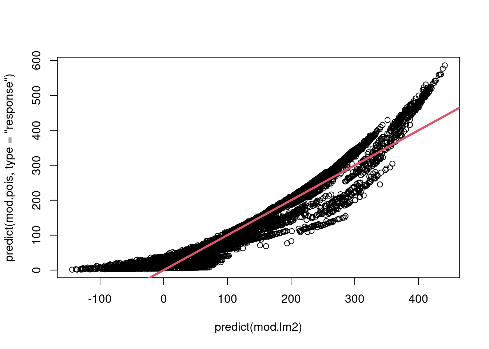

suppressPackageStartupMessages(library(ISLR2))
data(Default)
n <- nrow(Default) # sample size
table(Default$default)/n # Overall no-default and default-rate
No Yes
0.9667 0.0333 Classification problems occur often, perhaps even more so than regression problems.
Some examples include:
One of the running example for this chapter: The (simulated) Default data set which is part of the online resources of our textbook ISLR, but also contained in the R package ISLR2. 
Let’s take a first look at the a priori default rate in this dataset:
suppressPackageStartupMessages(library(ISLR2))
data(Default)
n <- nrow(Default) # sample size
table(Default$default)/n # Overall no-default and default-rate
No Yes
0.9667 0.0333 Linear regression is often not appropriate in the case of a qualitative response \(Y.\)
Suppose that we are trying to predict the medical condition of a patient in the emergency room on the basis of her symptoms. In this simplified example, there are three possible diagnoses:
strokedrug overdose, andepileptic seizureWe can encoding these values as a quantitative response variable, \[ Y=\left\{ \begin{array}{ll} 1&\quad\text{if }\texttt{stroke}\\ 2&\quad\text{if }\texttt{drug overdose}\\ 3&\quad\text{if }\texttt{epileptic seizure}\\ \end{array} \right. \] Using this coding, least squares could be used to fit a linear regression model to predict \(Y,\) but:
stroke and drug overdose is comparable to the gap \((3-2=1)\) between drug overdose and epileptic seizure.Generally, both points are quite a lot of nonsense for most applications.
Only if the response variable’s values did take on a natural ordering, such as “mild”, “moderate”, and “severe”, and we felt the gap between mild and moderate was similar to the gap between moderate and severe, then a 1, 2, 3 coding would be reasonable.
For a binary (two level) qualitative response, the situation is better. For instance, if there are only two conditions that we need to predict (e.g. either default\(=\)Yes or default\(=\)No), we can use a dummy variable coding \[
Y=\left\{
\begin{array}{ll}
0&\quad\text{if }\texttt{default}=\texttt{Yes}\\
1&\quad\text{if }\texttt{default}=\texttt{No}\\
\end{array}
\right.
\] We could then fit a linear regression to this binary response, and predict drug overdose if \(\hat{Y}> 0.5\) and stroke otherwise. In the binary case it is not hard to show that even if we flip the above coding, linear regression will produce the same final predictions.
For binary responses with a \(0/1\) coding, linear regression is not completely unreasonable. It can be shown that \[ Pr(\texttt{default}=\texttt{Yes}|X)\approx \hat{Y}=\beta_0+ \beta_1 X_1+\dots +\beta_p X_p. \]
However, if we use linear regression, some of our estimates might be outside the \([0, 1]\) interval (see Figure 4.2), which doesn’t make sense when predicting probabilities. 
Summary:
Thus, it is often preferable to use a classification method that is truly suited for qualitative response values.
Logistic regression models the probability that \(Y\) belongs to a particular category.
For the Default data, logistic regression models the conditional probability of default given values for the predictor(s). For example, the probability of default given balance: \[
Pr(\texttt{default}=\texttt{Yes}|\texttt{balance}) = p(\texttt{balance}),
\] where \(p(\texttt{balance})\in[0,1]\) is used as a short hand notation.
One might predict default\(=\)Yes for any individual for whom \(p(\texttt{balance}) > 0.5.\)
However, \(0.5\) this is not the only reasonable classification threshold!
For instance, if a company wishes to be conservative in predicting individuals who are at risk for default, then they may choose to use a lower threshold, such as \(p(\texttt{balance}) > 0.1.\)
For a binary coded dependen variable \(Y\in\{0,1\}\) we aim to model the relationship between \[ p(X)=Pr(Y=1|X)\quad\text{and}\quad X. \]
As discussed above, a linear regression model, e.g., \[ p(X)=\beta_0+\beta_1 X \] can produce nonsense predictions \(p(X)<0\) or \(p(X)>1\); see the left-hand panel of Figure 4.2.
Logistic regression avoids this problem by using the logistic function, \[ p(X)=\frac{e^{\beta_0+\beta_1 X}}{1+e^{\beta_0+\beta_1 X}}. \] To fit the parameters \(\beta_0\) and \(\beta_1\) we use an estimation method called maximum likelihood.
The right-hand panel of Figure 4.2 illustrates the fit of the logistic regression model to the Default data.
Note that \[ \begin{align*} p(X) & = \frac{e^{\beta_0+\beta_1 X}}{1+e^{\beta_0+\beta_1 X}} %\frac{p(X)}{1-p(X)} & = \frac{\frac{e^{\beta_0+\beta_1 X}}{1+e^{\beta_0+\beta_1 X}}}{1-p(X)} \\ %\frac{p(X)}{1-p(X)} & = \frac{\frac{e^{\beta_0+\beta_1 X}}{1+e^{\beta_0+\beta_1 X}}}{1-\frac{e^{\beta_0+\beta_1 X}}{1+e^{\beta_0+\beta_1 X}}} \\ %\frac{p(X)}{1-p(X)} & = \frac{\frac{e^{\beta_0+\beta_1 X}}{1+e^{\beta_0+\beta_1 X}}}{\frac{1+e^{\beta_0+\beta_1 X}}{1+e^{\beta_0+\beta_1 X}}-\frac{e^{\beta_0+\beta_1 X}}{1+e^{\beta_0+\beta_1 X}}} \\ \quad \Leftrightarrow\quad \frac{p(X)}{1-p(X)} = e^{\beta_0+\beta_1 X} \end{align*} \]
The quantity \[ \frac{p(X)}{1 − p(X)} \] is called the odds, and can take any value between 0 and plus infinity.
For instance
An odds value of \(\frac{1}{4}\) means that \(0.2=20\%\) of the people will default \[ \frac{0.2}{1-0.2}=\frac{1}{4} \]
An odds value of \(9\) means that \(0.9=90\%\) of the people will default \[ \frac{0.9}{1-0.9}=9 \]
By taking the logarithm, we arrive at log odds or logit \[ \log\left(\frac{p(X)}{1-p(X)}\right) = \beta_0+\beta_1 X \]
Thus increasing \(X\) by one unit …
Caution: The amount that \(p(X)\) changes due to a one-unit change in \(X\) depends on the current value of \(X.\) (The logistic regression model is a non-linear model.)
But regardless of the value of \(X\), if \(\beta_1\) is positive then increasing \(X\) will be associated with increasing \(p(X)\), and if \(\beta_1\) is negative then increasing \(X\) will be associated with decreasing \(p(X).\)
In logistic regression analysis, the unknown model parameters are estimated using maximum likelihood.
Basic intuition:
Find estimates \(\hat{\beta}_0\) and \(\hat{\beta}_1\) such that the predicted probability \(\hat{p}(x_i)\) for each person \(i\) corresponds as close as possible to its default status. (I.e. \(\hat{p}(x_i)\approx 1\) if person \(i\) defaulted and \(\hat{p}(x_i)\approx 0\) if not.)
This intuition can be formalized using a mathematical equation called a likelihood function: \[ \ell(\beta_0,\beta_1)=\prod_{i:y_{i}=1} p(x_i)\prod_{i:y_{i}=0} (1-p(x_i)) \] The estimates \(\hat\beta_0\) and \(\hat\beta_1\) are chosen to maximize this likelihood function.
Maximum likelihood is a very general estimation method that allows to estimate also non-linear models (like the logistic regression model).
Table 4.1 shows the coefficient estimates and related information that result from fitting a logistic regression model on the Default data in order to predict the probability of default\(=\)Yes using balance as the only predictor. 
Interpretation:
balance is associated with an increase in the probability of default.
balance is associated with an increase in the log odds of default by 0.0055 units.Once the coefficients have been estimated, we can compute the probability of default\(=1\) for any given credit card balance.
For example, using the coefficient estimates given in Table 4.1, we predict that the default probability for an individual with a balance-value of 1,000 [USD] is \[
\begin{align*}
\hat{p}(\texttt{balance})
&=Pr(\texttt{default}=\texttt{Yes}|\texttt{balance})\\
&=\frac{e^{\hat\beta_0+\hat\beta_1 \texttt{balance}}}{1+e^{\hat\beta_0+\hat\beta_1 \texttt{balance}}}\\
&=\frac{e^{-10.6513+ 0.0055\times 1000}}{1+e^{-10.6513+ 0.0055\times 1000}} = 0.00576 < 1\%
\end{align*}
\]
By contrast, the default probability for an individual with a balance-value of 2,000 [USD] equals \(0.586\) (or \(58,6\%\)) and is thus much higher.

\[ \begin{align*} Pr(\texttt{default}=\texttt{Yes}|\texttt{student}=\texttt{Yes}) &=\frac{e^{-3.5041+0.4049\times 1}}{1+e^{-3.5041+0.4049\times 1}}\\ &= 0.0431\\ Pr(\texttt{default}=\texttt{Yes}|\texttt{student}=\texttt{No}) &=\frac{e^{-3.5041+0.4049\times 0}}{1+e^{-3.5041+0.4049\times 0}}\\ &= 0.0292\\ \end{align*} \]
This may indicate that students tend to have higher default probabilities than non-students. But we may missed further factors here since we only use one predictor variable.
By analogy with the extension from simple to multiple linear, we can generalize the (simple) logistic regression model as following \[
\begin{align*}
p(X)
&=\frac{e^{\beta_0+\beta_1 X_1+\dots+\beta_p X_p}}{1+e^{\beta_0+\beta_1 X_1+\dots+\beta_p X_p}}\\
\log\left(\frac{p(X)}{1-p(X)}\right)
&= \beta_0+\beta_1 X_1+\dots+\beta_p X_p,\\
\end{align*}
\] where \(X=(X_1,\dots,X_p)\), and where the unknown parameters \(\beta_0,\dots,\beta_p\) are estimated by maximum likelihood. 
The negative coefficient for student in the multiple logistic regression indicates that for a fixed value of balance and income, a student is less likely to default than a non-student.
Interestingly, the effect of the dummy variable student[Yes] is now negative, in contrast to the estimation results of the (simple) logistic regression in Table 4.2 where it was positive.
The left-hand panel of Figure 4.3 provides a graphical illustration of this apparent paradox:
balance, the (overall) default rates of students are higher than those of non-students (horizontal broken lines). This overall effect was shown in Table 4.2.balance-values, the default rate for students is lower than for non-students (solid lines).
The right-hand panel of Figure 4.3 provides an explanation for this discrepancy: Students tend to hold higher levels of debt, which is in turn associated with higher probability of default.
Summary:
In other words: A student is riskier than a non-student if no information about the student’s credit card balance is available. However, that student is less risky than a non-student with the same credit card balance!
It is possible to extend the two-class logistic regression approach to the setting of \(K > 2\) classes. This extension is sometimes known as multinomial logistic regression.
To do this, we first select a single class to serve as the baseline; without loss of generality, we select the \(K\)th class for this role.
We model the probabilities that \(Y=k\), for \(k=1,\dots,K\), using \(k\)-specific parameters \(\beta_{k0},\dots,\beta_{kp}\) with \[ p_k(x)=Pr(Y=k|X=x)=\frac{e^{\beta_{k0} + \beta_{k1} x_1 + \dots + \beta_{kp} x_p}}{1+\sum_{l=1}^{K-1}e^{\beta_{l0} + \beta_{l1} x_1 + \dots + \beta_{lp} x_l}} \] for \(k=1,\dots,K-1\), and \[ p_K(x)=Pr(Y=K|X=x)=\frac{1}{1+\sum_{l=1}^{K-1}e^{\beta_{l0} + \beta_{l1} x_1 + \dots + \beta_{lp} x_l}} \]
For \(k=1,\dots,K-1\) it holds that \[ \log\left(\frac{Pr(Y=k|X=x)}{Pr(Y=K|X=x)}\right)=\beta_{k0} + \beta_{k1} x_1 + \dots + \beta_{kp} x_p \] which is the counterpart to the log odds equation for \(K=2.\)
Note that:
The predictions \(\hat{p}_k(x)\), for \(k=1,\dots,K\) do not depend on the choice of the baseline class.
However, interpretation of the coefficients in a multinomial logistic regression model must be done with care, since it is tied to the choice of baseline.
We now consider an alternative and less direct approach to estimating the probabilities \(Pr(Y=K|X=x).\)
Suppose that we wish to classify an observation into one of \(K\geq 2\) classes.
Prior probability: Let \[ \pi_k=Pr(Y=k) \] represent the overall prior probability that a randomly chosen observation comes from class \(k.\) We have that \[ \pi_1+\dots+\pi_K=1. \]
Density function of \(X\): Let \[ f_k(x)=Pr(X=x|Y=k) \] denote the (conditional) density of \(X\) for an observation that comes from class \(k.\)1
Posterior probability: Then Bayes’ theorem states that the probability that a observation with predictor values \(X=x\) comes from class \(k\) (i.e. the posterior probability), is given by \[ p_k(x) = Pr(Y=k|X=x)=\frac{\pi_k f_k(x)}{\sum_{l=1}^K\pi_l f_l(x)}. \tag{4.1}\]
While logistic regression aims at estimating the posterior probability \(p_k(x)\) directly, Bayes’s theorem gives us a way to estimate \(p_k(x)\) indirectly simply by plugging in estimates of \(\pi_k\) and \(f_k(x)\).
However, estimating the densities \(f_k(x)\) can be very challenging and we therefore have to make some simplifying assumptions. (E.g. assuming that the data is normal distributed.)
We know from Chapter 2 that the Bayes classifier, which classifies an observation \(x\) to the class \(k\) for which \(p_k(x)\) is largest, has the lowest possible error rate out of all classifiers.
In the following sections, we discuss three classifiers that use different estimates of \(f_k(x)\) to approximate the Bayes classifier:
For the beginning, let us assume that we have only one predictor, i.e., \(p=1.\)
To estimate \(f_k(x)\), we will assume that \(f_k\) is normal (or Gaussian). In the simple \(p=1\) dimensional setting, the normal distribution is \[ f_k(x) = \frac{1}{\sqrt{2\pi}\sigma_k}\exp\left(-\frac{1}{2\sigma_k^2}(x-\mu_k)^2\right), \] where
For now, let us further assume the simplifying case of equal variances across all classes, i.e. \[ \sigma_1^2=\dots = \sigma_K^2\equiv \sigma^2. \] Plugging this assumed version of \(f_k\) into Equation 4.1, leads to \[ p_k(x)=\frac{\pi_k \frac{1}{\sqrt{2\pi}\sigma}\exp\left(-\frac{1}{2\sigma^2}(x-\mu_k)^2\right)}{\sum_{l=1}^K\pi_l \frac{1}{\sqrt{2\pi}\sigma}\exp\left(-\frac{1}{2\sigma^2}(x-\mu_l)^2\right)}. \tag{4.2}\]
The Bayes classifier involves assigning an observation \(X = x\) to the class \(k\) for which \(p_k(x)\) is largest. Taking the \(\log\) of Equation 4.2 (i.e. a monotonic transformation) and rearranging terms shows that this is equivalent to assigning an observation \(X=x\) to the class \(k\) for which \[ \delta_k(x)=x\cdot\frac{\mu_k}{\sigma^2} - \frac{\mu_k^2}{2\sigma^2} + \log(\pi_k) \] is largest. The function \(\delta_k(x)\) is called the discriminant function.
Example:
In the case of only two classes, \(K=2\), with equal a priori probabilities \(\pi_1=\pi_2\equiv \pi^*\), the Bayes classifier assigns an observation \(X=x\) to class \(1\) if \[ \begin{align*} \delta_1(x) & > \delta_2(x)\\ %%% x\cdot\frac{\mu_1}{\sigma^2} - \frac{\mu_1^2}{2\sigma^2} + \log(\pi^*) & > x\cdot\frac{\mu_2}{\sigma^2} - \frac{\mu_2^2}{2\sigma^2} + \log(\pi^*)\\ %%% x\cdot\frac{\mu_1}{\sigma^2} - \frac{\mu_1^2}{2\sigma^2} & > x\cdot\frac{\mu_2}{\sigma^2} - \frac{\mu_2^2}{2\sigma^2}\\ %%% x\cdot\mu_1 - \frac{\mu_1^2}{2} & > x\cdot\mu_2 - \frac{\mu_2^2}{2}\\ %%% 2x\cdot(\mu_1-\mu_2) & > \mu_1^2 - \mu_2^2\\ %%% x & > \frac{\mu_1^2 - \mu_2^2}{2(\mu_1-\mu_2)} \end{align*} \] The Bayes decision boundary is the point for which \(\delta_1(x)=\delta_2(x)\) \[ \begin{align*} x =\frac{\mu_1^2 - \mu_2^2}{2(\mu_1-\mu_2)} &=\frac{(\mu_1 - \mu_2)(\mu_1 + \mu_2)}{2(\mu_1-\mu_2)}\\ &=\frac{(\mu_1 + \mu_2)}{2} \end{align*} \] Figure 4.4 shows a specific example with
The two densities \(f_1\) and \(f_2\) overlap such that for given \(X_x\) there is some uncertainty about the class to which the observation belongs to. In this example, the Bayes classifier assigns an observation \(X=x\) …

In the above example (Figure 4.4) we know all parameters \(\pi_k\), \(\mu_k\), \(k=1,\dots,K\), and \(\sigma\). In practice, however, these parameters are usually unknown, and thus need to estimated from the data.
The Linear Discriminant Analysis (LDA) method approximates the Bayes classifier by using the normality assumption and by plugging in estimates for the unknown parameters \(\pi_k\), \(\mu_k\), \(k=1,\dots,K\), and \(\sigma\). The following estimates are used: \[ \begin{align*} \hat\pi_k & = \frac{n_k}{n}\\ \hat\mu & = \frac{1}{n_k}\sum_{i:y_i=k}x_i\\ \hat\sigma & = \frac{1}{n-K}\sum_{k=1}^K\sum_{i:y_i=k}(x_i-\hat\mu_k)^2\\ \end{align*} \] The LDA classifier assigns an observation \(X=x\) to the class \(k\) for which \[ \hat\delta_k(x)=x\cdot\frac{\hat\mu_k}{\hat\sigma^2} - \frac{\hat\mu_k^2}{2\hat\sigma^2} + \log(\hat\pi_k) \] is largest.
LDA is named linear since the discriminant functions \(\hat\delta_k(x)\), \(k=1,\dots,K\) are linear functions of \(x.\)
Assumptions made by the LDA method:
In the case of multiple predictors \[ X=(X_1,\dots,X_p)\quad \text{with}\quad p>1 \] we need to assume that the observations for each class \(k\) come from a multivariate Gaussian distribution with
That is, a \((p\times 1)\) random vector \(X\) of class \(k\) is distributed as \[ X\sim N\left(\mu_k,\Sigma\right) \] with class-specific \((p\times 1)\) mean vector \(\mu_k\), \[ E(X)=\mu_k, \] and \((p\times p)\) covariance matrix \[ Cov(X)=\Sigma \] that is common for all classes \(k=1,\dots,K.\)
The multivariate Gaussian density for class \(k=1,\dots,K\) is defined as \[ f_k(x) = \frac{1}{(2\pi)^{p/2}|\Sigma|^{1/2}}\exp\left(-\frac{1}{2}(x-\mu_k)^T\sigma^{-1}(x-\mu_k)\right) \]
Figure 4.5 shows the case of bivariate (\(p=2\)) Gaussian distribution predictors.

Under the multivariate normality assumption (with common covariance matrix and group-specific mean vectors) the Bayes classifier assigns an multivariate observation \(X=x\) to the class for which the discriminant function \[ \delta_k(x)=x^T \Sigma^{-1}\mu_k - \frac{1}{2}\mu_k^T\Sigma^{-1}\mu_k + \log(\pi_k) \] is largest.
An example for \(p=2\) and \(K=3\) with three equally sized (i.e. \(\pi_1=\pi_2=\pi_3\)) Gaussian classes is shown in the left-hand panel of Figure 4.6. The three ellipses represent regions that contain \(95\%\) of the probability for each of the three classes. The dashed lines are the Bayes decision boundaries. In other words, they represent the set of values x for which \(\delta_k(x) = \delta_l(x)\), \(k\neq l\).

Again, the unknown parameters \(\mu_k\), \(\pi_k\), and \(\Sigma\) must be estimated from the data with formulas similar to those for the \(p=1\) case.
Default data exampleWe can perform LDA on the Default data in order to predict whether or not an individual will default on the basis of
Note: Student status is qualitative, and thus the normality assumption made by LDA is clearly violated in this example! However, LDA is often remarkably robust to model violations, as this example shows.
The LDA model fit to the \(10,000\) training samples results in a training error rate of \(2.75\%:\)
# MASS package contains the lda() function
suppressPackageStartupMessages(library(MASS))
## Sample size
n <- nrow(Default)
lda_obj <- lda(default ~ balance + student,
data = Default)
ldaPredict_obj <- predict(lda_obj)
## Training error rate:
sum(Default$default != ldaPredict_obj$class)/n [1] 0.0275## Training error rate of the null classifier:
sum(Default$default != rep("No", n))/n [1] 0.0333This sounds like a low error rate, but two caveats must be noted:
Any binary classifier can make two types of errors - here:
A confusion matrix shows both types of errors (see also Table 4.4):
## Confusion matrix (absolute frequencies)
table(ldaPredict_obj$class, Default$default,
dnn = c("Predicted default status",
"True default status")) True default status
Predicted default status No Yes
No 9644 252
Yes 23 81## Confusion matrix (relaive frequencies)
table(ldaPredict_obj$class, Default$default,
dnn = c("Predicted default status",
"True default status"))/n True default status
Predicted default status No Yes
No 0.9644 0.0252
Yes 0.0023 0.0081
A perfect confusion matrix has zeros in the off-diagonal entries.
R-Lab: ClassificationWe will begin by examining some numerical and graphical summaries of the Smarket data, which is part of the ISLR2 library. This data set consists of percentage returns for the S&P 500 stock index over \(1,250\)~days, from the beginning of 2001 until the end of 2005. For each date, we have recorded the percentage returns for each of the five previous trading days, lagone through lagfive. We have also recorded volume (the number of shares traded on the previous day, in billions), Today (the percentage return on the date in question) and direction (whether the market was Up or Down on this date). Our goal is to predict direction (a qualitative response) using the other features.
library(ISLR2)
names(Smarket)[1] "Year" "Lag1" "Lag2" "Lag3" "Lag4" "Lag5"
[7] "Volume" "Today" "Direction"dim(Smarket)[1] 1250 9summary(Smarket) Year Lag1 Lag2 Lag3
Min. :2001 Min. :-4.922000 Min. :-4.922000 Min. :-4.922000
1st Qu.:2002 1st Qu.:-0.639500 1st Qu.:-0.639500 1st Qu.:-0.640000
Median :2003 Median : 0.039000 Median : 0.039000 Median : 0.038500
Mean :2003 Mean : 0.003834 Mean : 0.003919 Mean : 0.001716
3rd Qu.:2004 3rd Qu.: 0.596750 3rd Qu.: 0.596750 3rd Qu.: 0.596750
Max. :2005 Max. : 5.733000 Max. : 5.733000 Max. : 5.733000
Lag4 Lag5 Volume Today
Min. :-4.922000 Min. :-4.92200 Min. :0.3561 Min. :-4.922000
1st Qu.:-0.640000 1st Qu.:-0.64000 1st Qu.:1.2574 1st Qu.:-0.639500
Median : 0.038500 Median : 0.03850 Median :1.4229 Median : 0.038500
Mean : 0.001636 Mean : 0.00561 Mean :1.4783 Mean : 0.003138
3rd Qu.: 0.596750 3rd Qu.: 0.59700 3rd Qu.:1.6417 3rd Qu.: 0.596750
Max. : 5.733000 Max. : 5.73300 Max. :3.1525 Max. : 5.733000
Direction
Down:602
Up :648
pairs(Smarket)
The cor() function produces a matrix that contains all of the pairwise correlations among the predictors in a data set. The first command below gives an error message because the direction variable is qualitative.
cor(Smarket)Error in cor(Smarket): 'x' must be numericcor(Smarket[, -9]) Year Lag1 Lag2 Lag3 Lag4
Year 1.00000000 0.029699649 0.030596422 0.033194581 0.035688718
Lag1 0.02969965 1.000000000 -0.026294328 -0.010803402 -0.002985911
Lag2 0.03059642 -0.026294328 1.000000000 -0.025896670 -0.010853533
Lag3 0.03319458 -0.010803402 -0.025896670 1.000000000 -0.024051036
Lag4 0.03568872 -0.002985911 -0.010853533 -0.024051036 1.000000000
Lag5 0.02978799 -0.005674606 -0.003557949 -0.018808338 -0.027083641
Volume 0.53900647 0.040909908 -0.043383215 -0.041823686 -0.048414246
Today 0.03009523 -0.026155045 -0.010250033 -0.002447647 -0.006899527
Lag5 Volume Today
Year 0.029787995 0.53900647 0.030095229
Lag1 -0.005674606 0.04090991 -0.026155045
Lag2 -0.003557949 -0.04338321 -0.010250033
Lag3 -0.018808338 -0.04182369 -0.002447647
Lag4 -0.027083641 -0.04841425 -0.006899527
Lag5 1.000000000 -0.02200231 -0.034860083
Volume -0.022002315 1.00000000 0.014591823
Today -0.034860083 0.01459182 1.000000000As one would expect, the correlations between the lag variables and today’s returns are close to zero. In other words, there appears to be little correlation between today’s returns and previous days’ returns. The only substantial correlation is between Year and volume. By plotting the data, which is ordered chronologically, we see that volume is increasing over time. In other words, the average number of shares traded daily increased from 2001 to 2005.
attach(Smarket)
plot(Volume)
Next, we will fit a logistic regression model in order to predict direction using lagone through lagfive and volume. The glm() function can be used to fit many types of generalized linear models , including logistic regression. The syntax of the glm() function is similar to that of lm(), except that we must pass in the argument family = binomial in order to tell R to run a logistic regression rather than some other type of generalized linear model.
glm.fits <- glm(
Direction ~ Lag1 + Lag2 + Lag3 + Lag4 + Lag5 + Volume,
data = Smarket, family = binomial
)
summary(glm.fits)
Call:
glm(formula = Direction ~ Lag1 + Lag2 + Lag3 + Lag4 + Lag5 +
Volume, family = binomial, data = Smarket)
Deviance Residuals:
Min 1Q Median 3Q Max
-1.446 -1.203 1.065 1.145 1.326
Coefficients:
Estimate Std. Error z value Pr(>|z|)
(Intercept) -0.126000 0.240736 -0.523 0.601
Lag1 -0.073074 0.050167 -1.457 0.145
Lag2 -0.042301 0.050086 -0.845 0.398
Lag3 0.011085 0.049939 0.222 0.824
Lag4 0.009359 0.049974 0.187 0.851
Lag5 0.010313 0.049511 0.208 0.835
Volume 0.135441 0.158360 0.855 0.392
(Dispersion parameter for binomial family taken to be 1)
Null deviance: 1731.2 on 1249 degrees of freedom
Residual deviance: 1727.6 on 1243 degrees of freedom
AIC: 1741.6
Number of Fisher Scoring iterations: 3The smallest \(p\)-value here is associated with lagone. The negative coefficient for this predictor suggests that if the market had a positive return yesterday, then it is less likely to go up today. However, at a value of \(0.15\), the \(p\)-value is still relatively large, and so there is no clear evidence of a real association between lagone and direction.
We use the coef() function in order to access just the coefficients for this fitted model. We can also use the summary() function to access particular aspects of the fitted model, such as the \(p\)-values for the coefficients.
coef(glm.fits) (Intercept) Lag1 Lag2 Lag3 Lag4 Lag5
-0.126000257 -0.073073746 -0.042301344 0.011085108 0.009358938 0.010313068
Volume
0.135440659 summary(glm.fits)$coef Estimate Std. Error z value Pr(>|z|)
(Intercept) -0.126000257 0.24073574 -0.5233966 0.6006983
Lag1 -0.073073746 0.05016739 -1.4565986 0.1452272
Lag2 -0.042301344 0.05008605 -0.8445733 0.3983491
Lag3 0.011085108 0.04993854 0.2219750 0.8243333
Lag4 0.009358938 0.04997413 0.1872757 0.8514445
Lag5 0.010313068 0.04951146 0.2082966 0.8349974
Volume 0.135440659 0.15835970 0.8552723 0.3924004summary(glm.fits)$coef[, 4](Intercept) Lag1 Lag2 Lag3 Lag4 Lag5
0.6006983 0.1452272 0.3983491 0.8243333 0.8514445 0.8349974
Volume
0.3924004 The predict() function can be used to predict the probability that the market will go up, given values of the predictors. The type = "response" option tells R to output probabilities of the form \(P(Y=1|X)\), as opposed to other information such as the logit. If no data set is supplied to the predict() function, then the probabilities are computed for the training data that was used to fit the logistic regression model. Here we have printed only the first ten probabilities. We know that these values correspond to the probability of the market going up, rather than down, because the contrasts() function indicates that R has created a dummy variable with a 1 for Up.
glm.probs <- predict(glm.fits, type = "response")
glm.probs[1:10] 1 2 3 4 5 6 7 8
0.5070841 0.4814679 0.4811388 0.5152224 0.5107812 0.5069565 0.4926509 0.5092292
9 10
0.5176135 0.4888378 contrasts(Direction) Up
Down 0
Up 1In order to make a prediction as to whether the market will go up or down on a particular day, we must convert these predicted probabilities into class labels, Up or Down. The following two commands create a vector of class predictions based on whether the predicted probability of a market increase is greater than or less than \(0.5\).
glm.pred <- rep("Down", 1250)
glm.pred[glm.probs > .5] = "Up"The first command creates a vector of 1,250 Down elements. The second line transforms to Up all of the elements for which the predicted probability of a market increase exceeds \(0.5\). Given these predictions, the table() function can be used to produce a confusion matrix in order to determine how many observations were correctly or incorrectly classified. %By inputting two qualitative vectors R will create a two by two table with counts of the number of times each combination occurred e.g. predicted {} and market increased, predicted {} and the market decreased etc.
table(glm.pred, Direction) Direction
glm.pred Down Up
Down 145 141
Up 457 507(507 + 145) / 1250[1] 0.5216mean(glm.pred == Direction)[1] 0.5216The diagonal elements of the confusion matrix indicate correct predictions, while the off-diagonals represent incorrect predictions. Hence our model correctly predicted that the market would go up on \(507\)~days and that it would go down on \(145\)~days, for a total of \(507+145 = 652\) correct predictions. The mean() function can be used to compute the fraction of days for which the prediction was correct. In this case, logistic regression correctly predicted the movement of the market \(52.2\),% of the time.
At first glance, it appears that the logistic regression model is working a little better than random guessing. However, this result is misleading because we trained and tested the model on the same set of \(1,250\) observations. In other words, \(100\%-52.2\%=47.8\%\), is the training error rate. As we have seen previously, the training error rate is often overly optimistic—it tends to underestimate the test error rate. In order to better assess the accuracy of the logistic regression model in this setting, we can fit the model using part of the data, and then examine how well it predicts the held out data. This will yield a more realistic error rate, in the sense that in practice we will be interested in our model’s performance not on the data that we used to fit the model, but rather on days in the future for which the market’s movements are unknown.
To implement this strategy, we will first create a vector corresponding to the observations from 2001 through 2004. We will then use this vector to create a held out data set of observations from 2005.
train <- (Year < 2005)
Smarket.2005 <- Smarket[!train, ]
dim(Smarket.2005)[1] 252 9Direction.2005 <- Direction[!train]The object train is a vector of \(1{,}250\) elements, corresponding to the observations in our data set. The elements of the vector that correspond to observations that occurred before 2005 are set to TRUE, whereas those that correspond to observations in 2005 are set to FALSE. The object train is a Boolean vector, since its elements are TRUE and FALSE. Boolean vectors can be used to obtain a subset of the rows or columns of a matrix. For instance, the command Smarket[train, ] would pick out a submatrix of the stock market data set, corresponding only to the dates before 2005, since those are the ones for which the elements of train are TRUE. The ! symbol can be used to reverse all of the elements of a Boolean vector. That is, !train is a vector similar to train, except that the elements that are TRUE in train get swapped to FALSE in !train, and the elements that are FALSE in train get swapped to TRUE in !train. Therefore, Smarket[!train, ] yields a submatrix of the stock market data containing only the observations for which train is FALSE—that is, the observations with dates in 2005. The output above indicates that there are 252 such observations.
We now fit a logistic regression model using only the subset of the observations that correspond to dates before 2005, using the subset argument. We then obtain predicted probabilities of the stock market going up for each of the days in our test set—that is, for the days in 2005.
glm.fits <- glm(
Direction ~ Lag1 + Lag2 + Lag3 + Lag4 + Lag5 + Volume,
data = Smarket, family = binomial, subset = train
)
glm.probs <- predict(glm.fits, Smarket.2005,
type = "response")Notice that we have trained and tested our model on two completely separate data sets: training was performed using only the dates before 2005, and testing was performed using only the dates in 2005. Finally, we compute the predictions for 2005 and compare them to the actual movements of the market over that time period.
glm.pred <- rep("Down", 252)
glm.pred[glm.probs > .5] <- "Up"
table(glm.pred, Direction.2005) Direction.2005
glm.pred Down Up
Down 77 97
Up 34 44mean(glm.pred == Direction.2005)[1] 0.4801587mean(glm.pred != Direction.2005)[1] 0.5198413The != notation means not equal to, and so the last command computes the test set error rate. The results are rather disappointing: the test error rate is \(52\),%, which is worse than random guessing! Of course this result is not all that surprising, given that one would not generally expect to be able to use previous days’ returns to predict future market performance. (After all, if it were possible to do so, then the authors of this book would be out striking it rich rather than writing a statistics textbook.)
We recall that the logistic regression model had very underwhelming \(p\)-values associated with all of the predictors, and that the smallest \(p\)-value, though not very small, corresponded to lagone. Perhaps by removing the variables that appear not to be helpful in predicting direction, we can obtain a more effective model. After all, using predictors that have no relationship with the response tends to cause a deterioration in the test error rate (since such predictors cause an increase in variance without a corresponding decrease in bias), and so removing such predictors may in turn yield an improvement. Below we have refit the logistic regression using just lagone and lagtwo, which seemed to have the highest predictive power in the original logistic regression model.
glm.fits <- glm(Direction ~ Lag1 + Lag2, data = Smarket,
family = binomial, subset = train)
glm.probs <- predict(glm.fits, Smarket.2005,
type = "response")
glm.pred <- rep("Down", 252)
glm.pred[glm.probs > .5] <- "Up"
table(glm.pred, Direction.2005) Direction.2005
glm.pred Down Up
Down 35 35
Up 76 106mean(glm.pred == Direction.2005)[1] 0.5595238106 / (106 + 76)[1] 0.5824176Now the results appear to be a little better: \(56\%\) of the daily movements have been correctly predicted. It is worth noting that in this case, a much simpler strategy of predicting that the market will increase every day will also be correct \(56\%\) of the time! Hence, in terms of overall error rate, the logistic regression method is no better than the naive approach. However, the confusion matrix shows that on days when logistic regression predicts an increase in the market, it has a \(58\%\) accuracy rate. This suggests a possible trading strategy of buying on days when the model predicts an increasing market, and avoiding trades on days when a decrease is predicted. Of course one would need to investigate more carefully whether this small improvement was real or just due to random chance.
Suppose that we want to predict the returns associated with particular values of lagone and lagtwo. In particular, we want to predict direction on a day when lagone and lagtwo equal 1.2 and~1.1, respectively, and on a day when they equal 1.5 and $-$0.8. We do this using the predict() function.
predict(glm.fits,
newdata =
data.frame(Lag1 = c(1.2, 1.5), Lag2 = c(1.1, -0.8)),
type = "response"
) 1 2
0.4791462 0.4960939 Now we will perform LDA on the Smarket data. In R, we fit an LDA model using the lda() function, which is part of the MASS library. Notice that the syntax for the lda() function is identical to that of lm(), and to that of glm() except for the absence of the family option. We fit the model using only the observations before 2005.
library(MASS)
lda.fit <- lda(Direction ~ Lag1 + Lag2, data = Smarket,
subset = train)
lda.fitCall:
lda(Direction ~ Lag1 + Lag2, data = Smarket, subset = train)
Prior probabilities of groups:
Down Up
0.491984 0.508016
Group means:
Lag1 Lag2
Down 0.04279022 0.03389409
Up -0.03954635 -0.03132544
Coefficients of linear discriminants:
LD1
Lag1 -0.6420190
Lag2 -0.5135293plot(lda.fit)
The LDA output indicates that \(\hat\pi_1=0.492\) and \(\hat\pi_2=0.508\); in other words, \(49.2\),% of the training observations correspond to days during which the market went down. It also provides the group means; these are the average of each predictor within each class, and are used by LDA as estimates of \(\mu_k\). These suggest that there is a tendency for the previous 2~days’ returns to be negative on days when the market increases, and a tendency for the previous days’ returns to be positive on days when the market declines. The coefficients of linear discriminants output provides the linear combination of lagone and lagtwo that are used to form the LDA decision rule. In other words, these are the multipliers of the elements of \(X=x\) in (4.24). If \(-0.642\times\)lagone\(- 0.514 \times\) lagtwo is large, then the LDA classifier will predict a market increase, and if it is small, then the LDA classifier will predict a market decline.
The plot() function produces plots of the linear discriminants, obtained by computing \(-0.642\times\)lagone\(- 0.514 \times\) lagtwo for each of the training observations. The Up and Down observations are displayed separately.
The predict() function returns a list with three elements. The first element, class, contains LDA’s predictions about the movement of the market. The second element, posterior, is a matrix whose \(k\)th column contains the posterior probability that the corresponding observation belongs to the \(k\)th class, computed from ( 4.15). Finally, x contains the linear discriminants, described earlier.
lda.pred <- predict(lda.fit, Smarket.2005)
names(lda.pred)[1] "class" "posterior" "x" As we observed in Section 4.5, the LDA and logistic regression predictions are almost identical.
lda.class <- lda.pred$class
table(lda.class, Direction.2005) Direction.2005
lda.class Down Up
Down 35 35
Up 76 106mean(lda.class == Direction.2005)[1] 0.5595238Applying a \(50\),% threshold to the posterior probabilities allows us to recreate the predictions contained in lda.pred$class.
sum(lda.pred$posterior[, 1] >= .5)[1] 70sum(lda.pred$posterior[, 1] < .5)[1] 182Notice that the posterior probability output by the model corresponds to the probability that the market will decrease:
lda.pred$posterior[1:20, 1] 999 1000 1001 1002 1003 1004 1005 1006
0.4901792 0.4792185 0.4668185 0.4740011 0.4927877 0.4938562 0.4951016 0.4872861
1007 1008 1009 1010 1011 1012 1013 1014
0.4907013 0.4844026 0.4906963 0.5119988 0.4895152 0.4706761 0.4744593 0.4799583
1015 1016 1017 1018
0.4935775 0.5030894 0.4978806 0.4886331 lda.class[1:20] [1] Up Up Up Up Up Up Up Up Up Up Up Down Up Up Up
[16] Up Up Down Up Up
Levels: Down UpIf we wanted to use a posterior probability threshold other than \(50\),% in order to make predictions, then we could easily do so. For instance, suppose that we wish to predict a market decrease only if we are very certain that the market will indeed decrease on that day—say, if the posterior probability is at least \(90\),%.
sum(lda.pred$posterior[, 1] > .9)[1] 0No days in 2005 meet that threshold! In fact, the greatest posterior probability of decrease in all of 2005 was \(52.02\),%.
We will now fit a QDA model to the Smarket data. QDA is implemented in R using the qda() function, which is also part of the MASS library. The syntax is identical to that of lda().
qda.fit <- qda(Direction ~ Lag1 + Lag2, data = Smarket,
subset = train)
qda.fitCall:
qda(Direction ~ Lag1 + Lag2, data = Smarket, subset = train)
Prior probabilities of groups:
Down Up
0.491984 0.508016
Group means:
Lag1 Lag2
Down 0.04279022 0.03389409
Up -0.03954635 -0.03132544The output contains the group means. But it does not contain the coefficients of the linear discriminants, because the QDA classifier involves a quadratic, rather than a linear, function of the predictors. The predict() function works in exactly the same fashion as for LDA.
qda.class <- predict(qda.fit, Smarket.2005)$class
table(qda.class, Direction.2005) Direction.2005
qda.class Down Up
Down 30 20
Up 81 121mean(qda.class == Direction.2005)[1] 0.5992063Interestingly, the QDA predictions are accurate almost \(60\),% of the time, even though the 2005 data was not used to fit the model. This level of accuracy is quite impressive for stock market data, which is known to be quite hard to model accurately. This suggests that the quadratic form assumed by QDA may capture the true relationship more accurately than the linear forms assumed by LDA and logistic regression. However, we recommend evaluating this method’s performance on a larger test set before betting that this approach will consistently beat the market!
Next, we fit a naive Bayes model to the Smarket data. Naive Bayes is implemented in R using the naiveBayes() function, which is part of the e1071 library. The syntax is identical to that of lda() and qda(). By default, this implementation of the naive Bayes classifier models each quantitative feature using a Gaussian distribution. However, a kernel density method can also be used to estimate the distributions.
library(e1071)
nb.fit <- naiveBayes(Direction ~ Lag1 + Lag2, data = Smarket,
subset = train)
nb.fit
Naive Bayes Classifier for Discrete Predictors
Call:
naiveBayes.default(x = X, y = Y, laplace = laplace)
A-priori probabilities:
Y
Down Up
0.491984 0.508016
Conditional probabilities:
Lag1
Y [,1] [,2]
Down 0.04279022 1.227446
Up -0.03954635 1.231668
Lag2
Y [,1] [,2]
Down 0.03389409 1.239191
Up -0.03132544 1.220765The output contains the estimated mean and standard deviation for each variable in each class. For example, the mean for lagone is \(0.0428\) for
Direction=Down, and the standard deviation is \(1.23\). We can easily verify this:
mean(Lag1[train][Direction[train] == "Down"])[1] 0.04279022sd(Lag1[train][Direction[train] == "Down"])[1] 1.227446The predict() function is straightforward.
nb.class <- predict(nb.fit, Smarket.2005)
table(nb.class, Direction.2005) Direction.2005
nb.class Down Up
Down 28 20
Up 83 121mean(nb.class == Direction.2005)[1] 0.5912698Naive Bayes performs very well on this data, with accurate predictions over \(59\%\) of the time. This is slightly worse than QDA, but much better than LDA.
The predict() function can also generate estimates of the probability that each observation belongs to a particular class. %
nb.preds <- predict(nb.fit, Smarket.2005, type = "raw")
nb.preds[1:5, ] Down Up
[1,] 0.4873164 0.5126836
[2,] 0.4762492 0.5237508
[3,] 0.4653377 0.5346623
[4,] 0.4748652 0.5251348
[5,] 0.4901890 0.5098110We will now perform KNN using the knn() function, which is part of the class library. This function works rather differently from the other model-fitting functions that we have encountered thus far. Rather than a two-step approach in which we first fit the model and then we use the model to make predictions, knn() forms predictions using a single command. The function requires four inputs.
train.X below.test.X below.train.Direction below.We use the cbind() function, short for column bind, to bind the lagone and lagtwo variables together into two matrices, one for the training set and the other for the test set.
library(class)
train.X <- cbind(Lag1, Lag2)[train, ]
test.X <- cbind(Lag1, Lag2)[!train, ]
train.Direction <- Direction[train]Now the knn() function can be used to predict the market’s movement for the dates in 2005. We set a random seed before we apply knn() because if several observations are tied as nearest neighbors, then R will randomly break the tie. Therefore, a seed must be set in order to ensure reproducibility of results.
set.seed(1)
knn.pred <- knn(train.X, test.X, train.Direction, k = 1)
table(knn.pred, Direction.2005) Direction.2005
knn.pred Down Up
Down 43 58
Up 68 83(83 + 43) / 252[1] 0.5The results using \(K=1\) are not very good, since only \(50\),% of the observations are correctly predicted. Of course, it may be that \(K=1\) results in an overly flexible fit to the data. Below, we repeat the analysis using \(K=3\).
knn.pred <- knn(train.X, test.X, train.Direction, k = 3)
table(knn.pred, Direction.2005) Direction.2005
knn.pred Down Up
Down 48 54
Up 63 87mean(knn.pred == Direction.2005)[1] 0.5357143The results have improved slightly. But increasing \(K\) further turns out to provide no further improvements. It appears that for this data, QDA provides the best results of the methods that we have examined so far.
KNN does not perform well on the Smarket data but it does often provide impressive results. As an example we will apply the KNN approach to the Insurance data set, which is part of the ISLR2 library. This data set includes \(85\) predictors that measure demographic characteristics for 5,822 individuals. The response variable is Purchase, which indicates whether or not a given individual purchases a caravan insurance policy. In this data set, only \(6\),% of people purchased caravan insurance.
dim(Caravan)[1] 5822 86attach(Caravan)
summary(Purchase) No Yes
5474 348 348 / 5822[1] 0.05977327Because the KNN classifier predicts the class of a given test observation by identifying the observations that are nearest to it, the scale of the variables matters. Variables that are on a large scale will have a much larger effect on the distance between the observations, and hence on the KNN classifier, than variables that are on a small scale. For instance, imagine a data set that contains two variables, salary and age (measured in dollars and years, respectively). As far as KNN is concerned, a difference of $1,000 in salary is enormous compared to a difference of \(50\)~years in age. Consequently, salary will drive the KNN classification results, and age will have almost no effect. This is contrary to our intuition that a salary difference of $\(1{,}000\) is quite small compared to an age difference of \(50\)~years. Furthermore, the importance of scale to the KNN classifier leads to another issue: if we measured salary in Japanese yen, or if we measured age in minutes, then we’d get quite different classification results from what we get if these two variables are measured in dollars and years.
A good way to handle this problem is to the data so that all variables are given a mean of zero and a standard deviation of one. Then all variables will be on a comparable scale. The scale() function does just this. In standardizing the data, we exclude column \(86\), because that is the qualitative Purchase variable.
standardized.X <- scale(Caravan[, -86])
var(Caravan[, 1])[1] 165.0378var(Caravan[, 2])[1] 0.1647078var(standardized.X[, 1])[1] 1var(standardized.X[, 2])[1] 1Now every column of standardized.X has a standard deviation of one and a mean of zero.
We now split the observations into a test set, containing the first 1,000 observations, and a training set, containing the remaining observations. We fit a KNN model on the training data using \(K=1\), and evaluate its performance on the test data.%
test <- 1:1000
train.X <- standardized.X[-test, ]
test.X <- standardized.X[test, ]
train.Y <- Purchase[-test]
test.Y <- Purchase[test]
set.seed(1)
knn.pred <- knn(train.X, test.X, train.Y, k = 1)
mean(test.Y != knn.pred)[1] 0.118mean(test.Y != "No")[1] 0.059The vector test is numeric, with values from \(1\) through \(1,000\). Typing standardized.X[test, ] yields the submatrix of the data containing the observations whose indices range from \(1\) to \(1,000\), whereas typing
standardized.X[-test, ] yields the submatrix containing the observations whose indices do not range from \(1\) to \(1,000\). The KNN error rate on the 1,000 test observations is just under \(12\),%. At first glance, this may appear to be fairly good. However, since only \(6\),% of customers purchased insurance, we could get the error rate down to \(6\),% by always predicting No regardless of the values of the predictors!
Suppose that there is some non-trivial cost to trying to sell insurance to a given individual. For instance, perhaps a salesperson must visit each potential customer. If the company tries to sell insurance to a random selection of customers, then the success rate will be only \(6\),%, which may be far too low given the costs involved. Instead, the company would like to try to sell insurance only to customers who are likely to buy it. So the overall error rate is not of interest. Instead, the fraction of individuals that are correctly predicted to buy insurance is of interest.
It turns out that KNN with \(K=1\) does far better than random guessing among the customers that are predicted to buy insurance. Among \(77\) such customers, \(9\), or \(11.7\),%, actually do purchase insurance. This is double the rate that one would obtain from random guessing.
table(knn.pred, test.Y) test.Y
knn.pred No Yes
No 873 50
Yes 68 99 / (68 + 9)[1] 0.1168831Using \(K=3\), the success rate increases to \(19\),%, and with \(K=5\) the rate is \(26.7\),%. This is over four times the rate that results from random guessing. It appears that KNN is finding some real patterns in a difficult data set!
knn.pred <- knn(train.X, test.X, train.Y, k = 3)
table(knn.pred, test.Y) test.Y
knn.pred No Yes
No 920 54
Yes 21 55 / 26[1] 0.1923077knn.pred <- knn(train.X, test.X, train.Y, k = 5)
table(knn.pred, test.Y) test.Y
knn.pred No Yes
No 930 55
Yes 11 44 / 15[1] 0.2666667However, while this strategy is cost-effective, it is worth noting that only 15 customers are predicted to purchase insurance using KNN with \(K=5\). In practice, the insurance company may wish to expend resources on convincing more than just 15 potential customers to buy insurance.
As a comparison, we can also fit a logistic regression model to the data. If we use \(0.5\) as the predicted probability cut-off for the classifier, then we have a problem: only seven of the test observations are predicted to purchase insurance. Even worse, we are wrong about all of these! However, we are not required to use a cut-off of \(0.5\). If we instead predict a purchase any time the predicted probability of purchase exceeds \(0.25\), we get much better results: we predict that 33 people will purchase insurance, and we are correct for about \(33\),% of these people. This is over five times better than random guessing!
glm.fits <- glm(Purchase ~ ., data = Caravan,
family = binomial, subset = -test)Warning: glm.fit: fitted probabilities numerically 0 or 1 occurredglm.probs <- predict(glm.fits, Caravan[test, ],
type = "response")
glm.pred <- rep("No", 1000)
glm.pred[glm.probs > .5] <- "Yes"
table(glm.pred, test.Y) test.Y
glm.pred No Yes
No 934 59
Yes 7 0glm.pred <- rep("No", 1000)
glm.pred[glm.probs > .25] <- "Yes"
table(glm.pred, test.Y) test.Y
glm.pred No Yes
No 919 48
Yes 22 1111 / (22 + 11)[1] 0.3333333Finally, we fit a Poisson regression model to the Bikeshare data set, which measures the number of bike rentals (bikers) per hour in Washington, DC. The data can be found in the ISLR2 library.
attach(Bikeshare)
dim(Bikeshare)[1] 8645 15names(Bikeshare) [1] "season" "mnth" "day" "hr" "holiday"
[6] "weekday" "workingday" "weathersit" "temp" "atemp"
[11] "hum" "windspeed" "casual" "registered" "bikers" We begin by fitting a least squares linear regression model to the data.
mod.lm <- lm(
bikers ~ mnth + hr + workingday + temp + weathersit,
data = Bikeshare
)
summary(mod.lm)
Call:
lm(formula = bikers ~ mnth + hr + workingday + temp + weathersit,
data = Bikeshare)
Residuals:
Min 1Q Median 3Q Max
-299.00 -45.70 -6.23 41.08 425.29
Coefficients:
Estimate Std. Error t value Pr(>|t|)
(Intercept) -68.632 5.307 -12.932 < 2e-16 ***
mnthFeb 6.845 4.287 1.597 0.110398
mnthMarch 16.551 4.301 3.848 0.000120 ***
mnthApril 41.425 4.972 8.331 < 2e-16 ***
mnthMay 72.557 5.641 12.862 < 2e-16 ***
mnthJune 67.819 6.544 10.364 < 2e-16 ***
mnthJuly 45.324 7.081 6.401 1.63e-10 ***
mnthAug 53.243 6.640 8.019 1.21e-15 ***
mnthSept 66.678 5.925 11.254 < 2e-16 ***
mnthOct 75.834 4.950 15.319 < 2e-16 ***
mnthNov 60.310 4.610 13.083 < 2e-16 ***
mnthDec 46.458 4.271 10.878 < 2e-16 ***
hr1 -14.579 5.699 -2.558 0.010536 *
hr2 -21.579 5.733 -3.764 0.000168 ***
hr3 -31.141 5.778 -5.389 7.26e-08 ***
hr4 -36.908 5.802 -6.361 2.11e-10 ***
hr5 -24.135 5.737 -4.207 2.61e-05 ***
hr6 20.600 5.704 3.612 0.000306 ***
hr7 120.093 5.693 21.095 < 2e-16 ***
hr8 223.662 5.690 39.310 < 2e-16 ***
hr9 120.582 5.693 21.182 < 2e-16 ***
hr10 83.801 5.705 14.689 < 2e-16 ***
hr11 105.423 5.722 18.424 < 2e-16 ***
hr12 137.284 5.740 23.916 < 2e-16 ***
hr13 136.036 5.760 23.617 < 2e-16 ***
hr14 126.636 5.776 21.923 < 2e-16 ***
hr15 132.087 5.780 22.852 < 2e-16 ***
hr16 178.521 5.772 30.927 < 2e-16 ***
hr17 296.267 5.749 51.537 < 2e-16 ***
hr18 269.441 5.736 46.976 < 2e-16 ***
hr19 186.256 5.714 32.596 < 2e-16 ***
hr20 125.549 5.704 22.012 < 2e-16 ***
hr21 87.554 5.693 15.378 < 2e-16 ***
hr22 59.123 5.689 10.392 < 2e-16 ***
hr23 26.838 5.688 4.719 2.41e-06 ***
workingday 1.270 1.784 0.711 0.476810
temp 157.209 10.261 15.321 < 2e-16 ***
weathersitcloudy/misty -12.890 1.964 -6.562 5.60e-11 ***
weathersitlight rain/snow -66.494 2.965 -22.425 < 2e-16 ***
weathersitheavy rain/snow -109.745 76.667 -1.431 0.152341
---
Signif. codes: 0 '***' 0.001 '**' 0.01 '*' 0.05 '.' 0.1 ' ' 1
Residual standard error: 76.5 on 8605 degrees of freedom
Multiple R-squared: 0.6745, Adjusted R-squared: 0.6731
F-statistic: 457.3 on 39 and 8605 DF, p-value: < 2.2e-16Due to space constraints, we truncate the output of summary(mod.lm). In mod.lm, the first level of hr (0) and mnth (Jan) are treated as the baseline values, and so no coefficient estimates are provided for them: implicitly, their coefficient estimates are zero, and all other levels are measured relative to these baselines. For example, the Feb coefficient of \(6.845\) signifies that, holding all other variables constant, there are on average about 7 more riders in February than in January. Similarly there are about 16.5 more riders in March than in January.
The results seen in Section 4.6.1 used a slightly different coding of the variables hr and mnth, as follows:
contrasts(Bikeshare$hr) = contr.sum(24)
contrasts(Bikeshare$mnth) = contr.sum(12)
mod.lm2 <- lm(
bikers ~ mnth + hr + workingday + temp + weathersit,
data = Bikeshare
)
summary(mod.lm2)
Call:
lm(formula = bikers ~ mnth + hr + workingday + temp + weathersit,
data = Bikeshare)
Residuals:
Min 1Q Median 3Q Max
-299.00 -45.70 -6.23 41.08 425.29
Coefficients:
Estimate Std. Error t value Pr(>|t|)
(Intercept) 73.5974 5.1322 14.340 < 2e-16 ***
mnth1 -46.0871 4.0855 -11.281 < 2e-16 ***
mnth2 -39.2419 3.5391 -11.088 < 2e-16 ***
mnth3 -29.5357 3.1552 -9.361 < 2e-16 ***
mnth4 -4.6622 2.7406 -1.701 0.08895 .
mnth5 26.4700 2.8508 9.285 < 2e-16 ***
mnth6 21.7317 3.4651 6.272 3.75e-10 ***
mnth7 -0.7626 3.9084 -0.195 0.84530
mnth8 7.1560 3.5347 2.024 0.04295 *
mnth9 20.5912 3.0456 6.761 1.46e-11 ***
mnth10 29.7472 2.6995 11.019 < 2e-16 ***
mnth11 14.2229 2.8604 4.972 6.74e-07 ***
hr1 -96.1420 3.9554 -24.307 < 2e-16 ***
hr2 -110.7213 3.9662 -27.916 < 2e-16 ***
hr3 -117.7212 4.0165 -29.310 < 2e-16 ***
hr4 -127.2828 4.0808 -31.191 < 2e-16 ***
hr5 -133.0495 4.1168 -32.319 < 2e-16 ***
hr6 -120.2775 4.0370 -29.794 < 2e-16 ***
hr7 -75.5424 3.9916 -18.925 < 2e-16 ***
hr8 23.9511 3.9686 6.035 1.65e-09 ***
hr9 127.5199 3.9500 32.284 < 2e-16 ***
hr10 24.4399 3.9360 6.209 5.57e-10 ***
hr11 -12.3407 3.9361 -3.135 0.00172 **
hr12 9.2814 3.9447 2.353 0.01865 *
hr13 41.1417 3.9571 10.397 < 2e-16 ***
hr14 39.8939 3.9750 10.036 < 2e-16 ***
hr15 30.4940 3.9910 7.641 2.39e-14 ***
hr16 35.9445 3.9949 8.998 < 2e-16 ***
hr17 82.3786 3.9883 20.655 < 2e-16 ***
hr18 200.1249 3.9638 50.488 < 2e-16 ***
hr19 173.2989 3.9561 43.806 < 2e-16 ***
hr20 90.1138 3.9400 22.872 < 2e-16 ***
hr21 29.4071 3.9362 7.471 8.74e-14 ***
hr22 -8.5883 3.9332 -2.184 0.02902 *
hr23 -37.0194 3.9344 -9.409 < 2e-16 ***
workingday 1.2696 1.7845 0.711 0.47681
temp 157.2094 10.2612 15.321 < 2e-16 ***
weathersitcloudy/misty -12.8903 1.9643 -6.562 5.60e-11 ***
weathersitlight rain/snow -66.4944 2.9652 -22.425 < 2e-16 ***
weathersitheavy rain/snow -109.7446 76.6674 -1.431 0.15234
---
Signif. codes: 0 '***' 0.001 '**' 0.01 '*' 0.05 '.' 0.1 ' ' 1
Residual standard error: 76.5 on 8605 degrees of freedom
Multiple R-squared: 0.6745, Adjusted R-squared: 0.6731
F-statistic: 457.3 on 39 and 8605 DF, p-value: < 2.2e-16What is the difference between the two codings? In mod.lm2, a coefficient estimate is reported for all but the last level of hr and mnth. Importantly, in mod.lm2, the coefficient estimate for the last level of mnth is not zero: instead, it equals the negative of the sum of the coefficient estimates for all of the other levels. Similarly, in mod.lm2, the coefficient estimate for the last level of hr is the negative of the sum of the coefficient estimates for all of the other levels. This means that the coefficients of hr and mnth in mod.lm2 will always sum to zero, and can be interpreted as the difference from the mean level. For example, the coefficient for January of \(-46.087\) indicates that, holding all other variables constant, there are typically 46 fewer riders in January relative to the yearly average.
It is important to realize that the choice of coding really does not matter, provided that we interpret the model output correctly in light of the coding used. For example, we see that the predictions from the linear model are the same regardless of coding:
sum((predict(mod.lm) - predict(mod.lm2))^2)[1] 1.586608e-18The sum of squared differences is zero. We can also see this using the all.equal() function:
all.equal(predict(mod.lm), predict(mod.lm2))[1] TRUETo reproduce the left-hand side of Figure 4.13, we must first obtain the coefficient estimates associated with mnth. The coefficients for January through November can be obtained directly from the mod.lm2 object. The coefficient for December must be explicitly computed as the negative sum of all the other months.
coef.months <- c(coef(mod.lm2)[2:12],
-sum(coef(mod.lm2)[2:12]))To make the plot, we manually label the \(x\)-axis with the names of the months.
plot(coef.months, xlab = "Month", ylab = "Coefficient",
xaxt = "n", col = "blue", pch = 19, type = "o")
axis(side = 1, at = 1:12, labels = c("J", "F", "M", "A",
"M", "J", "J", "A", "S", "O", "N", "D"))
Reproducing the right-hand side of Figure 4.13 follows a similar process.
coef.hours <- c(coef(mod.lm2)[13:35],
-sum(coef(mod.lm2)[13:35]))
plot(coef.hours, xlab = "Hour", ylab = "Coefficient",
col = "blue", pch = 19, type = "o")
Now, we consider instead fitting a Poisson regression model to the Bikeshare data. Very little changes, except that we now use the function glm() with the argument family = poisson to specify that we wish to fit a Poisson regression model:
mod.pois <- glm(
bikers ~ mnth + hr + workingday + temp + weathersit,
data = Bikeshare, family = poisson
)
summary(mod.pois)
Call:
glm(formula = bikers ~ mnth + hr + workingday + temp + weathersit,
family = poisson, data = Bikeshare)
Deviance Residuals:
Min 1Q Median 3Q Max
-20.7574 -3.3441 -0.6549 2.6999 21.9628
Coefficients:
Estimate Std. Error z value Pr(>|z|)
(Intercept) 4.118245 0.006021 683.964 < 2e-16 ***
mnth1 -0.670170 0.005907 -113.445 < 2e-16 ***
mnth2 -0.444124 0.004860 -91.379 < 2e-16 ***
mnth3 -0.293733 0.004144 -70.886 < 2e-16 ***
mnth4 0.021523 0.003125 6.888 5.66e-12 ***
mnth5 0.240471 0.002916 82.462 < 2e-16 ***
mnth6 0.223235 0.003554 62.818 < 2e-16 ***
mnth7 0.103617 0.004125 25.121 < 2e-16 ***
mnth8 0.151171 0.003662 41.281 < 2e-16 ***
mnth9 0.233493 0.003102 75.281 < 2e-16 ***
mnth10 0.267573 0.002785 96.091 < 2e-16 ***
mnth11 0.150264 0.003180 47.248 < 2e-16 ***
hr1 -0.754386 0.007879 -95.744 < 2e-16 ***
hr2 -1.225979 0.009953 -123.173 < 2e-16 ***
hr3 -1.563147 0.011869 -131.702 < 2e-16 ***
hr4 -2.198304 0.016424 -133.846 < 2e-16 ***
hr5 -2.830484 0.022538 -125.586 < 2e-16 ***
hr6 -1.814657 0.013464 -134.775 < 2e-16 ***
hr7 -0.429888 0.006896 -62.341 < 2e-16 ***
hr8 0.575181 0.004406 130.544 < 2e-16 ***
hr9 1.076927 0.003563 302.220 < 2e-16 ***
hr10 0.581769 0.004286 135.727 < 2e-16 ***
hr11 0.336852 0.004720 71.372 < 2e-16 ***
hr12 0.494121 0.004392 112.494 < 2e-16 ***
hr13 0.679642 0.004069 167.040 < 2e-16 ***
hr14 0.673565 0.004089 164.722 < 2e-16 ***
hr15 0.624910 0.004178 149.570 < 2e-16 ***
hr16 0.653763 0.004132 158.205 < 2e-16 ***
hr17 0.874301 0.003784 231.040 < 2e-16 ***
hr18 1.294635 0.003254 397.848 < 2e-16 ***
hr19 1.212281 0.003321 365.084 < 2e-16 ***
hr20 0.914022 0.003700 247.065 < 2e-16 ***
hr21 0.616201 0.004191 147.045 < 2e-16 ***
hr22 0.364181 0.004659 78.173 < 2e-16 ***
hr23 0.117493 0.005225 22.488 < 2e-16 ***
workingday 0.014665 0.001955 7.502 6.27e-14 ***
temp 0.785292 0.011475 68.434 < 2e-16 ***
weathersitcloudy/misty -0.075231 0.002179 -34.528 < 2e-16 ***
weathersitlight rain/snow -0.575800 0.004058 -141.905 < 2e-16 ***
weathersitheavy rain/snow -0.926287 0.166782 -5.554 2.79e-08 ***
---
Signif. codes: 0 '***' 0.001 '**' 0.01 '*' 0.05 '.' 0.1 ' ' 1
(Dispersion parameter for poisson family taken to be 1)
Null deviance: 1052921 on 8644 degrees of freedom
Residual deviance: 228041 on 8605 degrees of freedom
AIC: 281159
Number of Fisher Scoring iterations: 5We can plot the coefficients associated with mnth and hr, in order to reproduce Figure 4.15:
coef.mnth <- c(coef(mod.pois)[2:12],
-sum(coef(mod.pois)[2:12]))
plot(coef.mnth, xlab = "Month", ylab = "Coefficient",
xaxt = "n", col = "blue", pch = 19, type = "o")
axis(side = 1, at = 1:12, labels = c("J", "F", "M", "A", "M", "J", "J", "A", "S", "O", "N", "D"))
coef.hours <- c(coef(mod.pois)[13:35],
-sum(coef(mod.pois)[13:35]))
plot(coef.hours, xlab = "Hour", ylab = "Coefficient",
col = "blue", pch = 19, type = "o")
We can once again use the predict() function to obtain the fitted values (predictions) from this Poisson regression model. However, we must use the argument type = "response" to specify that we want R to output \(\exp(\hat\beta_0 + \hat\beta_1 X_1 + \ldots +\hat\beta_p X_p)\) rather than \(\hat\beta_0 + \hat\beta_1 X_1 + \ldots + \hat\beta_p X_p\), which it will output by default.
plot(predict(mod.lm2), predict(mod.pois, type = "response"))
abline(0, 1, col = 2, lwd = 3)
The predictions from the Poisson regression model are correlated with those from the linear model; however, the former are non-negative. As a result the Poisson regression predictions tend to be larger than those from the linear model for either very low or very high levels of ridership.
In this section, we used the glm() function with the argument family = poisson in order to perform Poisson regression. Earlier in this lab we used the glm() function with family = binomial to perform logistic regression. Other choices for the family argument can be used to fit other types of GLMs. For instance, family = Gamma fits a gamma regression model.
Prepare the following exercises of Chapter 4 in our course textbook ISLR:
Technically, this definition is only correct if \(X\) is a qualitative random variable. If \(X\) is quantitative, then \(f_k(x)dx\) corresponds to the probability of \(X\) falling in a small region \(dx\) around \(x.\)↩︎